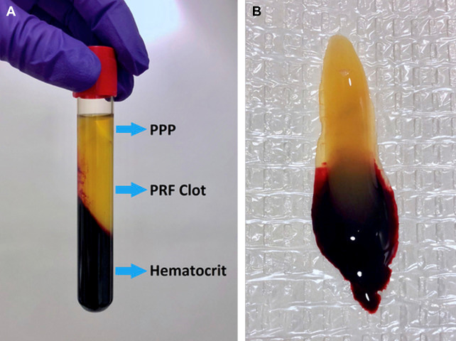
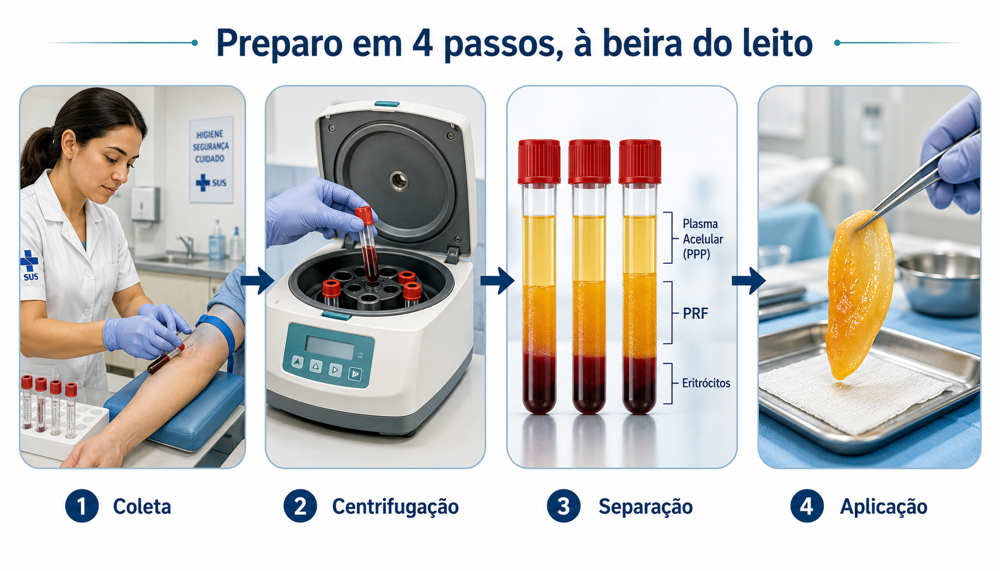
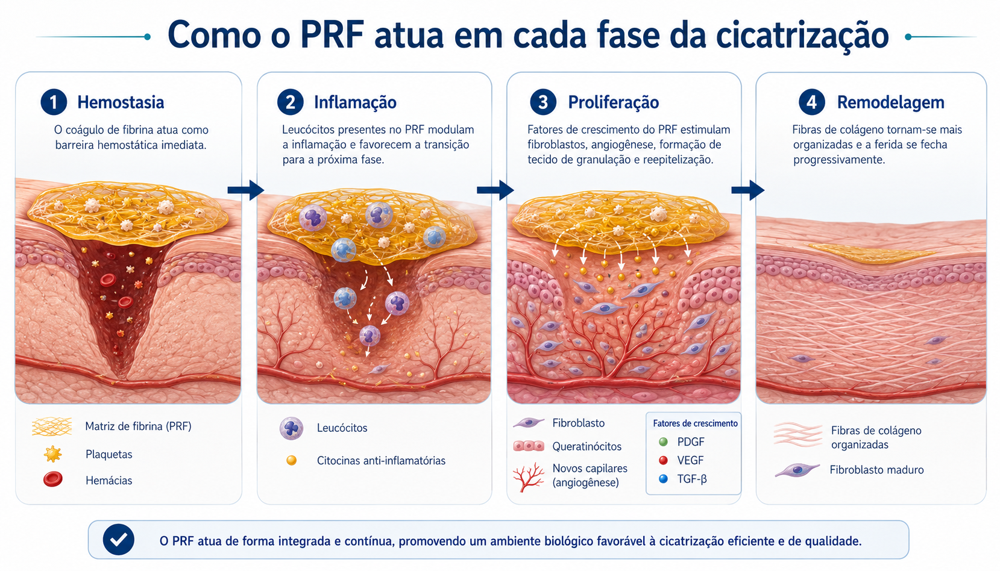
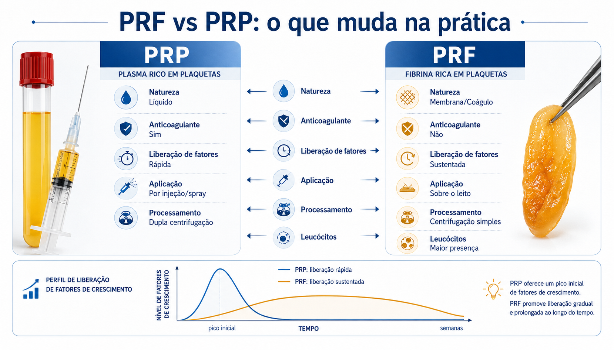
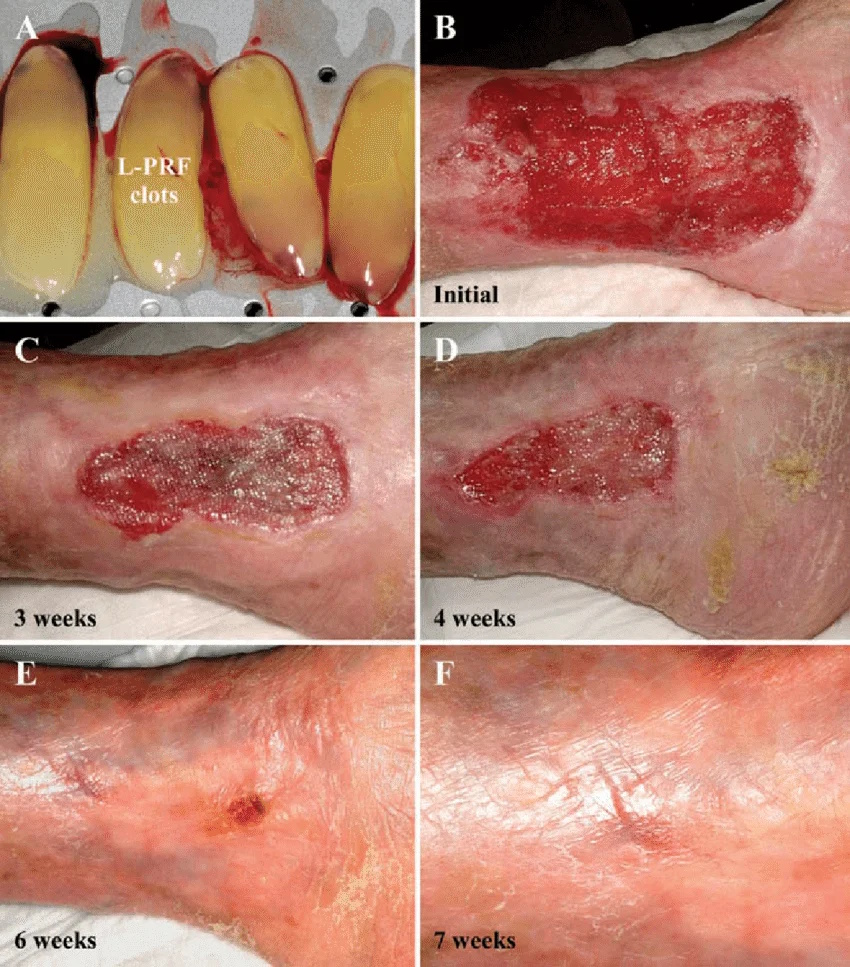
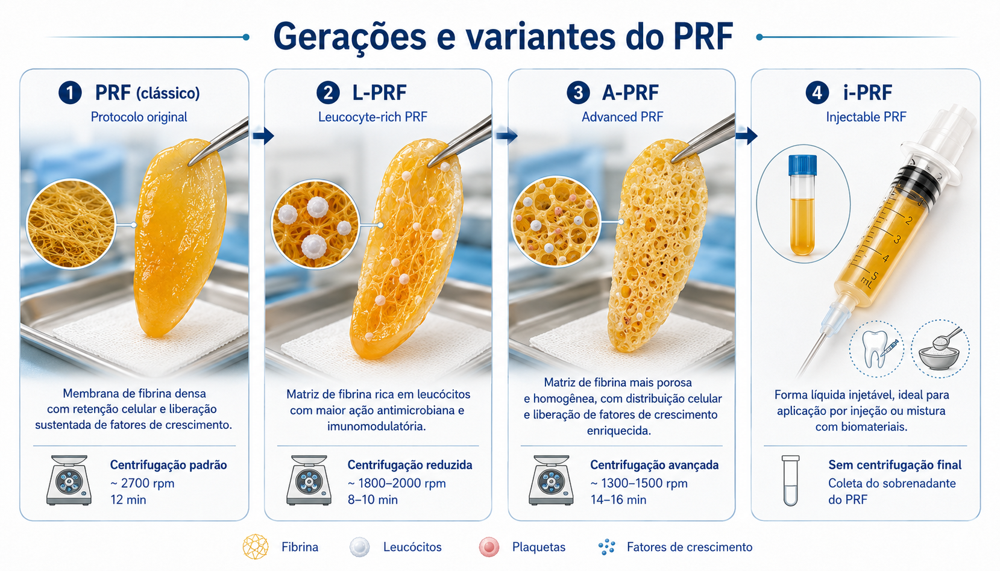

Do sangue do próprio paciente, uma membrana biológica que libera fatores de crescimento por dias — e pode mudar o curso de úlceras que não fecham.
Feridas crônicas — úlceras diabéticas, venosas e lesões por pressão — compartilham uma característica central: o ambiente biológico local está esgotado. Há excesso de inflamação, déficit de fatores de crescimento, angiogênese insuficiente e tecido de granulação pobre.[1] Curativos avançados controlam o ambiente externo, mas não repõem o que falta no leito da ferida.
Platelet-Rich Fibrin (PRF) é uma membrana biológica autóloga — obtida do próprio sangue do paciente — que concentra plaquetas, leucócitos e fatores de crescimento numa malha tridimensional de fibrina. Não há aditivos, anticoagulantes ou produtos de origem animal no processo.[1]
Foi desenvolvido em 2001 pelo cirurgião francês Joseph Choukroun para uso em cirurgia oral.[2] Nas duas décadas seguintes, sua aplicação se expandiu para feridas de pele, úlceras crônicas e medicina regenerativa em geral.[4]
"A matriz de fibrina do PRF não é apenas um suporte — ela controla quando e quanto de cada fator de crescimento é liberado, mimetizando o processo fisiológico de cicatrização."[1]

A vantagem logística do PRF sobre outros concentrados plaquetários é a simplicidade. Não exige laboratório especializado, reagentes externos ou processamento prolongado.[1][5]

Aproximadamente 10–20 mL de sangue coletado em tubos de vidro sem anticoagulante.[1] O contato com o vidro já inicia o processo de coagulação natural.
Após a centrifugação formam-se: (topo) plasma acelular PPP, (meio) coágulo de fibrina rico em plaquetas — o PRF — e (base) fração de hemácias.[1] O PRF é coletado 2 mm abaixo da divisória inferior.
O coágulo é aplicado diretamente sobre o leito da ferida ou comprimido para obter uma membrana mais firme. Estudos recomendam uso imediato após formação para maximizar a liberação de fatores de crescimento.[9]
O intervalo entre a coleta do sangue e a centrifugação deve ser o menor possível. O sangue sem anticoagulante começa a coagular ao contato com o vidro, reduzindo progressivamente a incorporação de fibrinogênio ao coágulo — o que compromete a qualidade do PRF.[1]
O PRF atua em múltiplas frentes da cicatrização. A malha de fibrina retém plaquetas e leucócitos que liberam fatores de crescimento de forma gradual e sustentada — por até 7 dias, ao contrário dos concentrados convencionais que liberam tudo de uma vez.[10][9]
Fator de crescimento derivado de plaquetas. Atrai fibroblastos e células-tronco mesenquimais para o leito da ferida. Estimula proliferação e síntese de colágeno.[15]
Fator transformador de crescimento. Regula a transição inflamação → proliferação → remodelagem. Estimula produção de matriz extracelular.[10]
Fator de crescimento endotelial vascular. Induz formação de novos vasos sanguíneos — essencial em feridas crônicas isquêmicas e diabéticas.[8][10]
A variante L-PRF concentra leucócitos que conferem propriedades antimicrobianas e imunomoduladoras, reduzindo o risco de infecção local.[3]

Ação do PRF: o próprio coágulo de fibrina age como barreira hemostática imediata.[1] Protege o leito da ferida e inicia o recrutamento plaquetário.
Ação do PRF: leucócitos presentes no L-PRF modulam a resposta inflamatória. Citocinas como IL-1β, IL-6 e IL-4 são liberadas progressivamente[10] — auxiliando na transição para a fase proliferativa, processo frequentemente bloqueado em feridas crônicas.
O PRP (Plasma Rico em Plaquetas) foi o precursor.[1] O PRF representa uma evolução de segunda geração que elimina os principais pontos críticos do PRP em ambiente clínico de feridas crônicas.[4]

| Característica | PRP | PRF |
|---|---|---|
| Anticoagulante | ✗ Necessário (citrato)[1] | ✓ Não utilizado |
| Trombina bovina | ✗ Necessária para gel[1] | ✓ Não necessária |
| Liberação de GF | Bolus (rápida e curta) | Lenta e sustentada (≥7 dias)[9][10] |
| Consistência | Líquida (injetável) | Membrana/coágulo sólido |
| Leucócitos | Baixa concentração | ✓ Alta (L-PRF)[3] |
| Complexidade | Moderada (2 centrifugações)[1] | ✓ Simples (1 centrifugação) |
| Custo | Moderado | ✓ Baixo[4] |
| Aplicação em feridas | Spray / injeção | Membrana sobre o leito |
A maior parte da literatura sobre PRF provém de odontologia e cirurgia bucomaxilofacial.[1] A expansão para feridas cutâneas crônicas é mais recente, mas os resultados são promissores.[4][7]
16 pacientes com feridas crônicas refratárias. Média de 4,37 aplicações de PRF por paciente.
60 pacientes randomizados. Avaliação de tecido de granulação, borda da ferida e drenagem.
Úlceras venosas, diabéticas e por pressão. Monitoramento de TGFβ-1, PDGF-AB e VEGF por 7 dias.
Meta-análise de ECRs avaliando PRF e fatores de crescimento concentrados em úlceras crônicas.
Desbridamento mecânico ou enzimático previamente. Feridas com biofilme ou necrose devem ter o leito adequadamente preparado — o PRF potencializa tecido viável, não substitui o desbridamento.
Coletar sangue venoso e centrifugar imediatamente.[1] O PRF deve ser obtido e aplicado em sequência — o intervalo não deve ultrapassar alguns minutos após a coleta.
Cobrir com curativo secundário não aderente. A membrana é absorvida naturalmente. Reaplicações semanais são descritas nos protocolos clínicos[10], ajustadas à resposta individual da ferida.

Desde o protocolo original de Choukroun[2], diversas otimizações foram propostas para aumentar a concentração de células ou modular a liberação de fatores de crescimento.[4]

Protocolo original.[2] 3.000 rpm, 10 minutos. Malha de fibrina densa. Base para a maioria dos estudos publicados.
Variante com alta concentração de leucócitos.[3] Propriedades antimicrobianas mais pronunciadas — vantagem em feridas com risco de colonização bacteriana.
Baixa velocidade (~200g, 8 min).[8] Produz malha de fibrina mais porosa, com plaquetas distribuídas homogeneamente e liberação superior de fatores de crescimento.
Versão líquida obtida por centrifugação mais breve. Permite aplicação por injeção — útil em feridas de difícil acesso ou associação com outros biomateriais.[4]
O PRF representa uma abordagem biologicamente racional para o manejo de feridas crônicas. Ao reconstituir localmente um microambiente próximo ao da cicatrização fisiológica[1], pode romper o bloqueio inflamatório crônico que mantém muitas úlceras abertas por meses ou anos.[10]
"PRF não é um curativo — é um andaime biológico vivo, fabricado em minutos a partir do sangue do próprio paciente, sem custo de matéria-prima e com risco desprezível."
O PRF é melhor posicionado como terapia adjuvante ao cuidado padrão de feridas — não como substituto de desbridamento, controle de carga bacteriana, terapia compressiva (em úlceras venosas) ou controle glicêmico.[10] Sua maior utilidade está em feridas com leito viável que não avançam apesar do cuidado convencional adequado.[5]
Selecione a alternativa correta. O gabarito e a explicação aparecem imediatamente após a sua resposta.
Não há resposta única. Use estas questões para discussão em grupo, portfólio reflexivo ou estudo individual — elas conectam a ciência do PRF à prática real do cuidado de feridas crônicas.
Em um paciente com úlcera venosa refratária de 6 meses, leito com tecido de granulação pobre mas sem necrose ou infecção ativa, você indicaria PRF como terapia adjuvante? Quais fatores do histórico clínico e do leito da ferida influenciariam sua decisão?
Considere: preparo do leito, etiologia, uso de terapia compressiva, disponibilidade de centrífuga.
A liberação sustentada de fatores de crescimento pelo PRF é apontada como vantagem sobre o PRP. Por que essa característica é especialmente relevante em feridas crônicas, onde o ambiente local é desfavorável à cicatrização?
Pense no excesso de proteases, na fase inflamatória prolongada e na necessidade de estímulo contínuo para a neoangiogênese.
A falta de padronização dos protocolos de centrifugação é apontada como uma das principais limitações do PRF. Que impacto prático isso tem para profissionais que desejam implementar o PRF na sua unidade? Como você abordaria essa questão?
Reflita sobre: validação de protocolo local, escolha de equipamento, rastreabilidade dos resultados clínicos.
O PRF é obtido do próprio sangue do paciente, sem aditivos externos. Do ponto de vista ético e de acesso, quais são as implicações dessa característica autóloga — tanto positivas (segurança, custo) quanto potencialmente limitantes (necessidade de coleta, comorbidades)?
Considere pacientes com anemia, coagulopatias, idosos frágeis ou em contexto de atenção primária sem infraestrutura para centrifugação.
Os estudos sobre PRF em feridas cutâneas crônicas ainda são numericamente modestos e heterogêneos. Que tipo de ensaio clínico você desenharia para responder à pergunta: "O L-PRF reduz o tempo de fechamento de úlceras venosas refratárias quando adicionado ao curativo compressivo padrão?"
Pense em desfechos primários e secundários, tamanho amostral, cegamento, frequência de aplicação e tempo de seguimento.
A Figura 2 deste material mostra fechamento completo de uma úlcera venosa em 7 semanas com L-PRF. Que perguntas você faria antes de generalizar esse resultado para a sua população de pacientes? O que pode ser diferente no seu contexto?
Reflita sobre: características do paciente, nível de controle da hipertensão venosa, aderência à terapia compressiva, número de aplicações, operador.